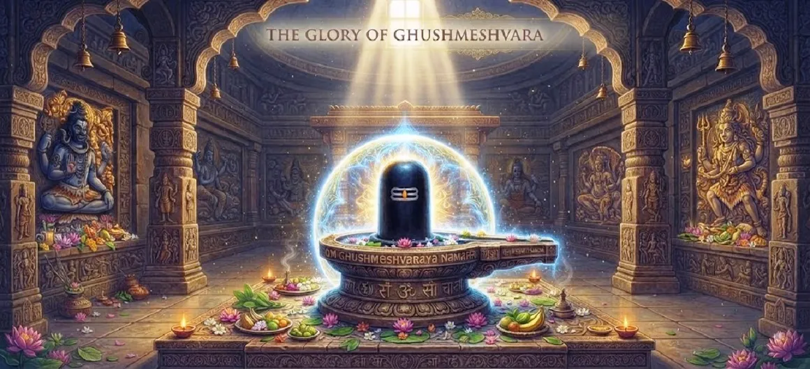

घुश्मेश्वर की महिमा
कोटिरुद्र संहिता का चौबीसवाँ अध्याय घुश्मेश्वर ज्योतिर्लिंग की दिव्य कथा और सर्वोच्च महिमा का वर्णन करता है।
इस पवित्र क्रम में वर्णित अंतिम ज्योतिर्लिंग के रूप में, यह पूर्ण भक्ति, पारिवारिक प्रेम और शिव की असीम कृपा का एक शाश्वत प्रमाण है।
यह अध्याय इस बात पर प्रकाश डालता है कि कैसे सच्ची आस्था मानवीय पीड़ा को दिव्य अनुभूति में बदल देती है।
अध्याय 24 की मुख्य बातें
अंतिम ज्योतिर्लिंग
बारह पवित्र तीर्थस्थलों में से अंतिम अभिव्यक्ति।
घुश्मा की भक्ति
अटूट आस्था और धर्मपरायणता की प्रेरक कहानी।
दयालु प्रभु
अपने भक्त की रक्षा और आशीर्वाद देने के लिए शिव का सीधा हस्तक्षेप।
दुःख का समाधान
दैवीय कृपा से दुःख का निवारण
आध्यात्मिक पूर्ति
शांति और शाश्वत मुक्ति की प्राप्ति.
शाश्वत विरासत
भावी पीढ़ियों के लिए मंदिर की स्थायी स्थापना।
इस अध्याय में मुख्य विषय
घुश्मा और सुधर्मा की कथा
अध्याय की शुरुआत सुधर्मा और उनकी धर्मपरायण पत्नी घुश्मा की कहानी से होती है, जिनका जीवन पूरी तरह से भगवान शिव की पूजा के लिए समर्पित था।
गंभीर पारिवारिक परीक्षणों और हृदय की पीड़ाओं को सहने के बावजूद, घुश्मा का विश्वास कभी नहीं डगमगाया।
आस्था और पवित्रता का परीक्षण
घुश्मा के अपार धैर्य और भक्ति की परीक्षा भारी त्रासदी के दौरान हुई, फिर भी उसने शांत और समर्पित हृदय बनाए रखा।
मिट्टी के लिंग बनाने का उनका दैनिक अनुष्ठान उनके गहरे समर्पण को दर्शाता था।
भगवान शिव का प्राकट्य
उनकी सर्वोच्च भक्ति और धर्म से प्रेरित होकर, भगवान शिव उन्हें सांत्वना देने और शांति बहाल करने के लिए अपने पूरे वैभव में प्रकट हुए।
दिव्य उपस्थिति ने आसपास के वातावरण को अलौकिक चमक से भर दिया।
घुश्मा को दिया गया वरदान
अत्यधिक प्रसन्न होकर, शिव ने घुश्मा को वरदान दिया, जिसने प्रार्थना की कि भगवान दुनिया के कल्याण के लिए उस स्थान पर सदैव मौजूद रहें।
शिव ने उनकी यह इच्छा पूरी की और ज्योतिर्लिंग का नाम उनके नाम पर रखा।
बारहवें ज्योतिर्लिंग की स्थापना
इस प्रकार, घुश्मेश्वर को बारहवें और अंतिम ज्योतिर्लिंग के रूप में स्थापित किया गया, जिसने शिव के चमकदार निवासों के पवित्र चक्र को पूरा किया।
यह शुद्ध प्रेम के प्रति दिव्य प्रतिक्रिया की एक शाश्वत अनुस्मारक के रूप में खड़ा है।
घुश्मेश्वर की पूजा की शक्ति
ऐसा कहा जाता है कि इस पवित्र मंदिर में पूजा करने से भक्तों को सभी पापों से मुक्ति मिलती है और उन्हें आंतरिक शांति और तृप्ति मिलती है।
यहां की आध्यात्मिक ऊर्जा टूटे हुए दिलों को ठीक करती है और विश्वास को मजबूत करती है।
सांसारिक कष्टों से मुक्ति
पाठ इस बात पर जोर देता है कि घुश्मेश्वर की सच्ची याद लोगों को सांसारिक चिंताओं, भय और दुःख से छुटकारा दिलाती है।
यहां शरण लेने वाला कोई भी भक्त अभागा नहीं जाता।
तीर्थयात्रियों की आध्यात्मिक उन्नति
इस मंदिर में आने वाले तीर्थयात्रियों को चेतना में गहरा बदलाव महसूस होता है, वे भौतिक आसक्तियों से दूर दिव्य ज्ञान की ओर बढ़ते हैं।
यात्रा आत्मा को पूरी तरह से शुद्ध कर देती है।
ज्योतिर्लिंग शृंखला का समापन
यह अध्याय कोटिरुद्र संहिता के भीतर बारह ज्योतिर्लिंगों की शानदार कथा को शानदार अंत तक लाता है।
यह सभी पूर्ववर्ती पवित्र धामों के आध्यात्मिक सार को एक साथ जोड़ता है।
अध्याय 25 की ओर
घुश्मेश्वर की महिमा का पता लगाने के बाद, कथा अब समर्पित तीर्थयात्रियों द्वारा की गई पवित्र यात्राओं का सम्मान करने के लिए बदल गई है।
पाठकों को अध्याय 25, शिव भक्तों की पवित्र तीर्थयात्रा जारी रखने के लिए आमंत्रित किया जाता है।
अध्याय 24 की मुख्य शिक्षाएँ
शुद्ध विश्वास की शक्ति
अटूट भक्ति सभी प्रतिकूलताओं पर विजय प्राप्त करती है।
दिव्य जवाबदेही
शिव सदैव सच्चे हृदय की पुकार का उत्तर देते हैं।
निःस्वार्थ प्रेम
मानवता के लिए घुश्मा की प्रार्थना सर्वोच्च करुणा का उदाहरण है।
दुःखों का निवारण
घुश्मेश्वर का स्मरण शोक और भय को नष्ट कर देता है।
आध्यात्मिक पूर्णता
बारह ज्योतिर्लिंग मुक्ति का पूरा नक्शा बनाते हैं।
शाश्वत अनुग्रह
प्रभु का आशीर्वाद समय और स्थान के पार कायम रहता है।
आध्यात्मिक चिंतन
घुश्मेश्वर की कहानी हमें सिखाती है कि सच्ची भक्ति का परीक्षण जीवन की सबसे बड़ी परीक्षाओं में होता है। अपनी पीड़ा के बावजूद घुश्मा के मन में कड़वाहट नहीं थी; इसके बजाय, उसने अपनी आत्मा भगवान शिव की पूजा में लगा दी। जब हम अपने हृदयों को ऐसी पवित्रता और निस्वार्थता से जोड़ते हैं, तो भगवान न केवल बाहरी रूप से एक ज्योतिर्लिंग के रूप में प्रकट होते हैं, बल्कि आंतरिक रूप से हमारी अपनी जागृत चेतना के भीतर प्रकट होते हैं। यह अध्याय बारह धामों की गौरवशाली यात्रा का समापन करता है, और हमें याद दिलाता है कि शिव की ओर हर कदम हमें हमारी सच्ची दिव्य पहचान के करीब लाता है।
अध्याय 24 का संदेश जीना
जीवन की अप्रत्याशित चुनौतियों और कठिनाइयों का सामना करते समय घुश्मा के धैर्य और विश्वास का अनुकरण करें।
ऐसा हृदय विकसित करें जो सच्ची आध्यात्मिक परिपक्वता दर्शाते हुए दूसरों के कल्याण के लिए प्रार्थना करे।
याद रखें कि भगवान शिव के प्रति समर्पण दर्द को शांति में और संघर्ष को आध्यात्मिक विजय में बदल देता है।
प्रमुख आध्यात्मिक अवधारणाएँ
भारत भर में दिव्य चेतना के बारह चमकदार स्तंभ।
विश्वास जो दुःख और परीक्षण के बीच भी स्थिर रहता है।
सच्चे भक्तों को शिव द्वारा दिया गया परम आशीर्वाद।
सभी पीड़ित प्राणियों के लिए भगवान की असीम कृपा।
सभी बारह तीर्थस्थलों के माध्यम से पवित्र तीर्थयात्रा की परिणति।
समर्पण और प्रार्थना के माध्यम से भीतर ईश्वर की प्राप्ति।
अध्याय सारांश
कोटिरुद्र संहिता अध्याय 24 में घुश्मा की प्रेरक कथा और बारहवें और अंतिम ज्योतिर्लिंग घुश्मेश्वर की स्थापना का वर्णन किया गया है। यह शुद्ध भक्ति की शक्ति, कष्ट के प्रति लचीलेपन और सच्ची प्रार्थनाओं का उत्तर देने में शिव की तत्काल कृपा को उजागर करता है। बारह पवित्र धामों पर स्मारकीय श्रृंखला को समाप्त करते हुए, यह अध्याय पाठक को अध्याय 25 की ओर सहजता से ले जाता है, जो शिव भक्तों की पवित्र तीर्थयात्रा की पड़ताल करता है।
अक्सर पूछे जाने वाले प्रश्न
1. कोटिरुद्र संहिता अध्याय 24 का मुख्य फोकस क्या है?
अध्याय 24 दिव्य कथा, सर्वोच्च आध्यात्मिक महिमा और बारह पवित्र धामों में से अंतिम घुश्मेश्वर ज्योतिर्लिंग की असीम कृपा पर केंद्रित है।
2. घुश्मेश्वर अद्वितीय रूप से पूजनीय क्यों हैं?
यह सुधर्मा और घुश्मा की शुद्ध भक्ति के साथ गहरे संबंध के लिए मनाया जाता है, जो दर्शाता है कि भगवान शिव पूर्ण विश्वास और निस्वार्थता पर कैसे प्रतिक्रिया देते हैं।
3. घुश्मेश्वर की पूजा से भक्तों को क्या लाभ होता है?
भक्तों को दुखों से मुक्ति, आध्यात्मिक संतुष्टि, पारिवारिक सद्भाव और मोक्ष की अंतिम प्राप्ति का आशीर्वाद मिलता है।
4. यह अध्याय पिछले अध्याय से किस प्रकार संबंधित है?
अध्याय 23 में भीमाशंकर की महानता के बाद, यह अध्याय घुश्मेश्वर की महिमा के साथ बारह ज्योतिर्लिंगों पर प्राथमिक श्रृंखला का समापन करता है।
5. इस अध्याय में कौन सी कथा वर्णित है?
कथा अध्याय 25, 'शिव भक्तों की पवित्र तीर्थयात्रा' में बदल जाती है।
6. घुश्मेश्वर कथा का व्यापक पाठ क्या है?
सच्ची भक्ति सांसारिक परीक्षाओं से परे है, और भगवान शिव हमेशा अपने सच्चे भक्तों की रक्षा और सम्मान करने के लिए प्रकट होते हैं।
"घुश्मेश्वर ज्योतिर्लिंग की महिमा भक्ति का चरम रत्न है, जो यह साबित करती है कि जहां शुद्ध आस्था निवास करती है, वहां भगवान शिव अपने भक्तों को गले लगाने के लिए शाश्वत रूप से प्रकट होते हैं।"
कोटिरुद्र संहिता के माध्यम से जारी रखें
अध्याय 24 में घुश्मेश्वर की महिमा का वर्णन किया गया है। अध्याय 25, शिव भक्तों की पवित्र तीर्थयात्रा जारी रखें।